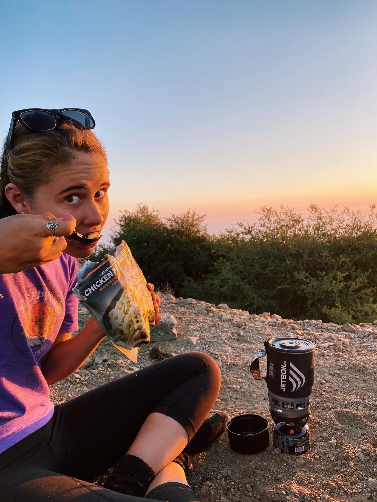
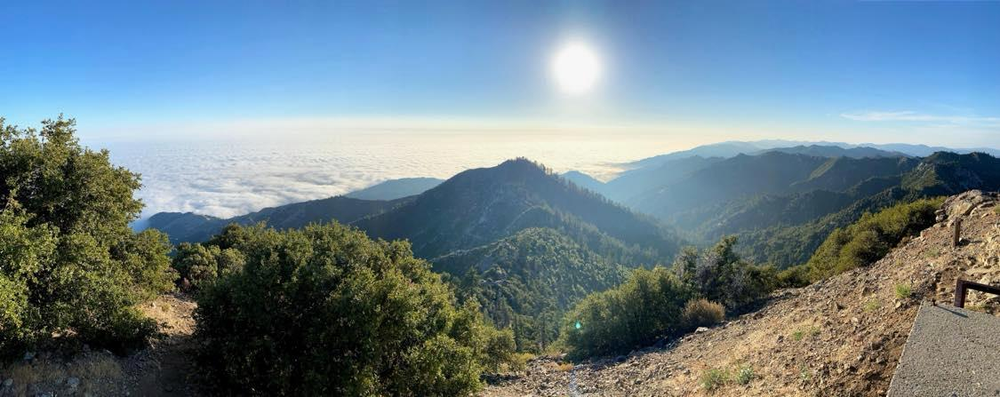
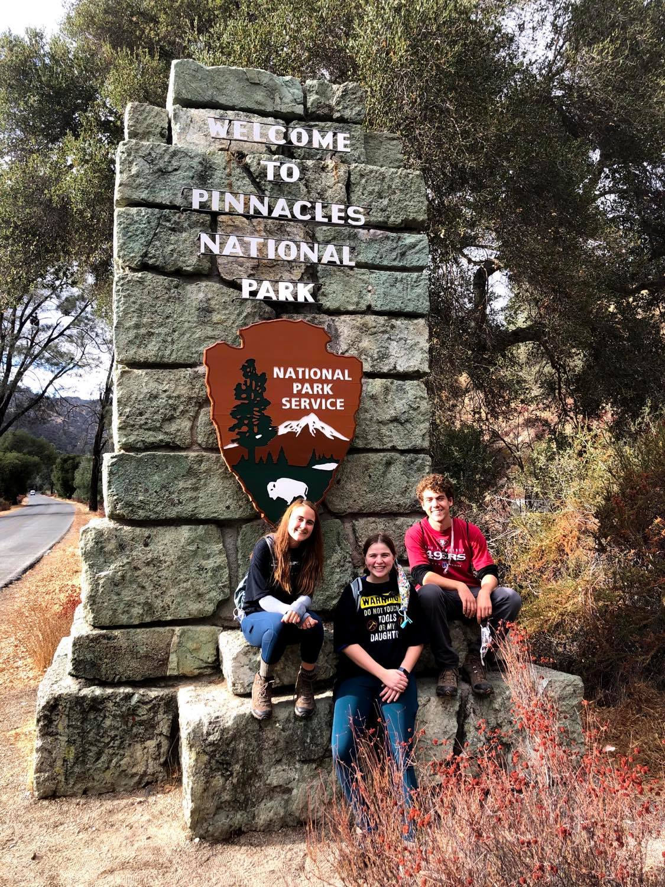
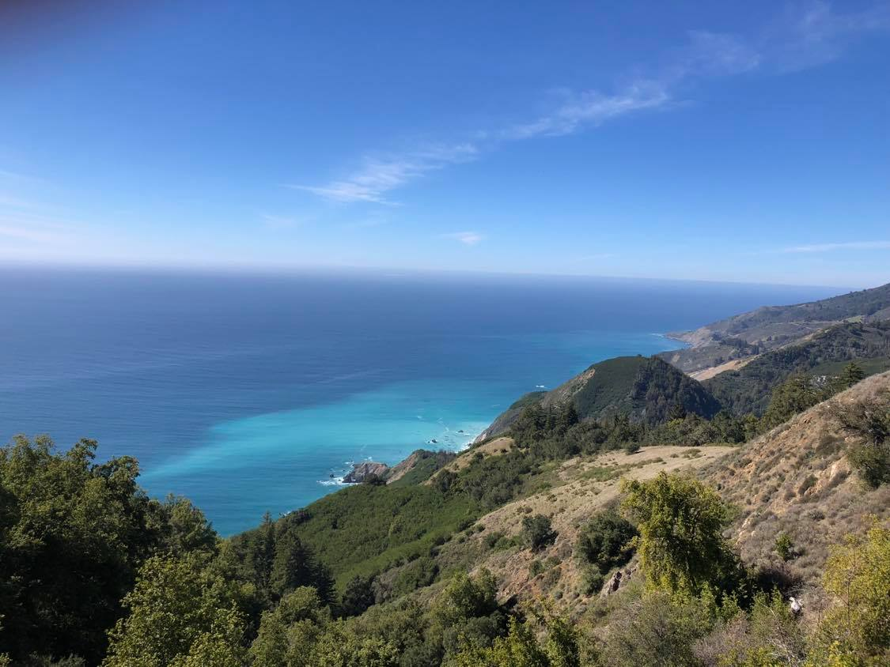
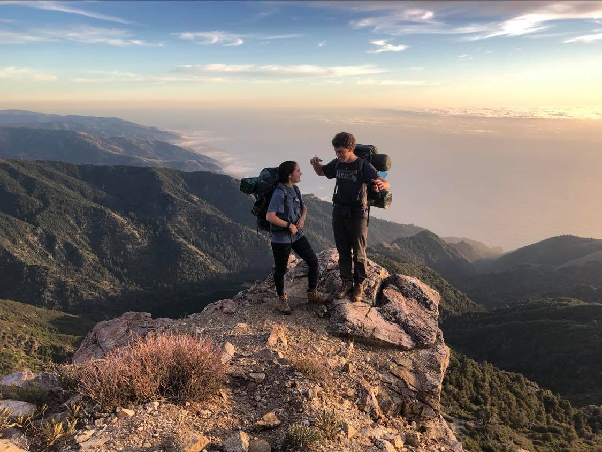
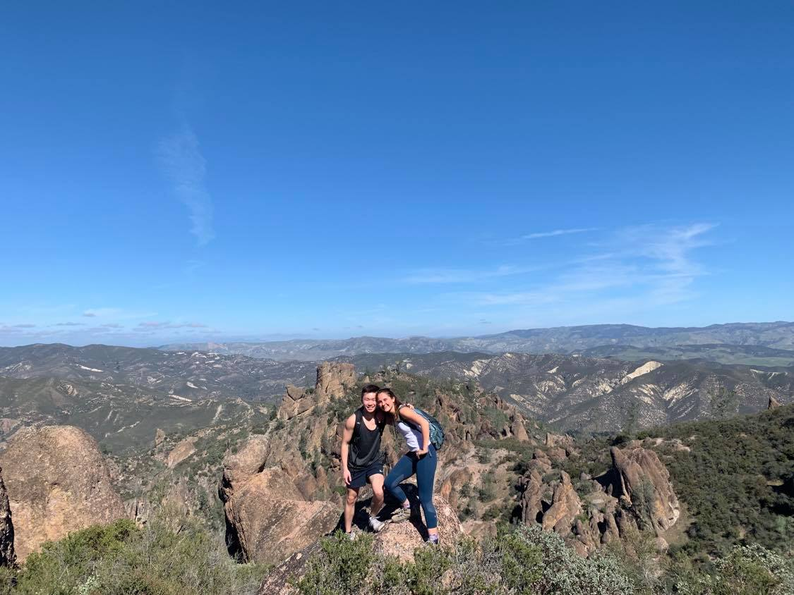
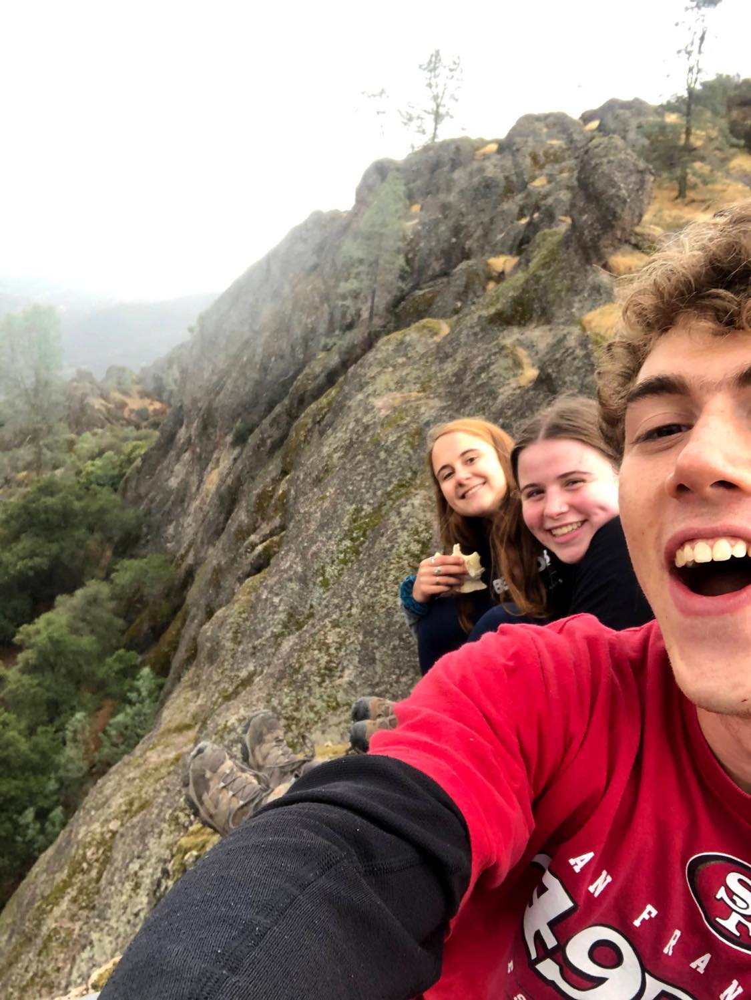

CALIFORNIA: SILICON VALLEY SECTION



The Silicon Valley section of California includes many day hike options that range from coastal to mountainous trails.
Cone Peak, one of my favorite backing trails, and Pinnacles National Park are in the Silicon Valley section.
Take a peek at the itinerary for these two trips!
CONE PEAK: VIA HIGHWAY 1
Level: Difficult ~ 21.1 miles
Location: Ventana Wilderness


One reason why I LOVE Cone Peak is because you get one of the best views of the California coast. Although it has some extreme uphill the view is incredible every step of the way!
CONE PEAK ITINERARY
DAY 1 ~ Parking Lot to the Peak, 15 miles. You start the trailhead at a campground near the highway. In the beginning you get an open view of the ocean and some wildflowers, but the trail steadily increases in elevation. About 8 miles in you reach a campground between some redwood trees, but if you keep pushing the view gets so much better! The last 2 miles are steep switch backs that are crazy hard, but please don't let that scare you. Once you make it to the peak there is an old building that provides great shelter from the sun. Wait for sunset - you will be so amazed seeing the sun fall underneath the clouds :)
DAY 2 ~ Wake up for sunrise, it is just as beautiful. Then head back using the same trail, which is so much easier on the way home :) I have done this trail twice and I was super sore both times hiking back to the trailhead!!
PINNACLES NATIONAL PARK: OLD PINNACLES TRAIL LOOP
Level: Moderate ~ 9.5 miles
Location: Pinnacles National Park


Pinnacles is worth the trip if you are in Silicon Valley. Although it does not have any backpacking, there are still day hikes and a campground within the park. I have done the loop aroud the whole park a few times now and it never gets boring.
PINNACLES: ITINERARY
DAY 1 ~ Try to get a campsite at Pinnacles Campground and spend a night there. Beware of the aggressive racoons there, they will do anything to get some of your food!
DAY 2 ~ Pack a lunch in your day pack and start the trail. If you do Pinnacles Old Trail Loop it will take you around the whole park where you'll see all kinds of terrain. Make sure to do the extra mile to check out the reservoir.
Back to Home